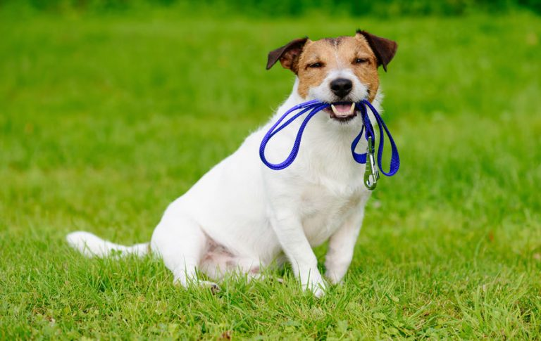

Paseos: Tips, Cuidados Veterinarios y Más
🐕🦺Consejos para Pasear a tu Perro
Pasear es una necesidad que cualquier perro tiene todos los días. No olvides que estos animales vivían antes en el medio salvaje y se guiaban por sus instintos. Por eso, hoy en día no pueden llevar una vida sedentaria. No deben quedarse todo el día tumbados en casa. Tienen que salir a hacer sus necesidades y realizar un poco de ejercicio.
Para que estos momentos de salida resulten provechosos tanto para ellos como para vos, te dejamos los siguientes consejos:
-Tranquilizá a tu mascota antes de salir para evitar que esté ansiosa o demasiado excitada.
-Si tira de la correa o se abalanza, detené el paso hasta que se calme. Así aprenderá a controlarse.
-Caminá de forma relajada: tu energía se transmite a tu perro. Mantenete alerta, pero tranquilo.
-Alterná el paseo con momentos de juego como premio por su buena conducta. Así se divierten y aprenden juntos.
❤️🐾🐶 KIT para Disfutar del Paseo
-🐕🦺 Correa siempre a mano, incluso en zonas seguras. Es esencial para evitar accidentes.
-💩 Bolsitas para recoger sus necesidades: ¡no las olvides!
-🍶 Agua fresca para hidratarlo después del paseo.
-📞 Un teléfono para emergencias nunca está de más.
-🥰🐶 Prestale atención en todo momento. Tu presencia es lo más importante para él.
